통신설비기능장 (2013-03-17 기출문제)
1과목: 임의 과목 구분(20문항)
1. PCM 통신에서 양자화 잡음을 줄이기 위한 방법과 거리가 먼 것은?
- 압신기를 사용한다.
- 비선형 양자화를 한다.
- 저역여파기의 차단 특성을 좋게 한다.
- 양자화시 사용하는 스텝 수를 증가시킨다.
(정답률: 76%)

2. 가입자의 발신, 통화 중 필요한 중계선 확인 등의 감시 기능을 하는 전자교환기의 장치는?
- 통화 스위치 회로망
- 주사 장치
- 중앙 제어 장치
- 일시 기억 장치
(정답률: 87%)
3. 다음 중 SONET/SDH에 대한 설명으로 틀린 것은?
- 장거리 통신에 적용될 수 있다.
- 동기식 전송방식을 사용한다.
- 최소 51.48[Mbps]에서 최대 1.2[Gbps]까지 전송할 수 있다.
- SONET은 STS을, SDH는 STM 계위를 따른다.
(정답률: 90%)
4. 평균보류시간이 10분, 최번시 호(Call)수가 600일때 통화량[Erl]은 얼마인가?
- 50[Erl]
- 100[Erl]
- 150[Erl]
- 200[Erl]
(정답률: 78%)
5. 전화국의 수가 30개인 복지국에서 국간 중계선을 망형으로 결선하면 중계선 수는?
- 255
- 435
- 300
- 600
(정답률: 89%)
6. 다음 중 전자교환기 소프트웨어가 가져야 할 주요 특성이 아닌 것은?
- 실시간 처리가 가능해야 한다.
- 다중 프로그래밍이 이루어져야 한다.
- 중단없는 서비스가 필요하다.
- 변경이나 확장이 어려운 소프트웨어 구조를 가져야 한다.
(정답률: 96%)
7. 전화 교환국의 전자교환시스템(Electronic Switching System) 시설에서 유지보수용으로사용하는 프로그램이 아닌 것은?
- 호 처리 프로그램
- 장애 처리 프로그램
- 장애 진단 프로그램
- 운용 관리 프로그램
(정답률: 78%)
8. 다음 중 축적 프로그램 제어방식과 관계없는 것은?
- 컴퓨터의 소프트웨어 기술이 중요하다.
- 제어부의 동작 프로그램을 미리 만들어 기억시킨다.
- 필요한 프로그램은 호처리에 관한 것과 보수용으로 나눈다.
- 저장된 프로그램의 기능변경이 곤란하다.
(정답률: 92%)
9. 다음과 같은 장ㆍ단점을 갖는 통신망에 해당되는 것은?
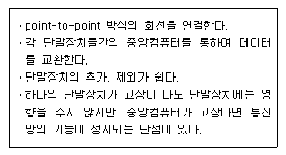
- 버스형
- 성형
- 트리형
- 링형
(정답률: 91%)
10. 다음 중 그림과 같은 회로의 필터 역할은?
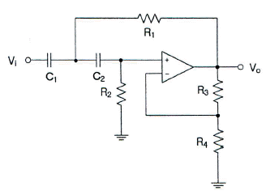
- HPF(High Pass Filter)
- LPF(Low Pass Filter)
- BPF(Band Pass Filter)
- BRF(Band Reject Filter)
(정답률: 90%)
11. 다음 중 극초단파대에서 사용되는 안테나가 아닌 것은?
- 롬빅 안테나
- 파라볼라 안테나
- 카세그레인 안테나
- 혼 리플렉터 안테나
(정답률: 81%)
12. 송신기에서 주파수를 체배하는 이유 중 가장 적합한 것은?
- 기생진동을 막기 위하여
- 주파수편차를 줄이기 위하여
- 수정발진기의 주파수를 정수배로 높이기 위하여
- 회로 구성을 간단히 하기 위하여
(정답률: 71%)
13. 안테나에 반사기를 붙이면 어떤 효과가 있는가?
- 임피던스 정합이 좋아진다.
- 광대역 특성이 얻어진다.
- 접지저항 손실이 적어진다.
- 전파를 한 방향으로 보낼 수 있다.
(정답률: 91%)
14. 초단파 통신에서 송신안테나의 높이가 25[m]이고 수신안테나의 높이가 16[m]일 때 직접파의 가시거리는?
- 약 47[km]
- 약 37[km]
- 약 27[km]
- 약 17[km]
(정답률: 68%)
15. 단파통신에서 나타나는 Dead Zone에 대한 설명으로 가장 적합한 것은?
- 지표파 및 전리층 반사파가 수신되는 지역
- 지표파 및 전리층 반사파가 수신되지 않는 지역
- 전리층 반사파는 수신되나 지표파가 수신되지 않는 지역
- 지표파는 수신되나 전리층 반사파가 수신되지 않는 지역
(정답률: 82%)
16. 이동통신에서의 상관대역폭(coherence bandwith)에 대한 설명으로 가장 적합한 것은?
- 상관관계가 큰 페이딩 특성을 갖는 주파수 대역폭
- 상관관계가 작은 페이딩 특성을 갖는 주파수 대역폭
- 수신신호의 지연확산에 비례하여 증가
- 수신신호의 세기를 측정하는데 사용되는 파라메타
(정답률: 70%)
17. 다음 중 궤도내 시험(IOT) 시스템에 대한 설명과 거리가 먼 것은?
- 주관제소에 설치된다.
- 위성이 발사하여 지정된 궤도에 진입한 후 궤도상에서 위성의 성능을 시험하기 위한 기능을 수행한다.
- 위성통신 시스템의 기능을 감시한다.
- 중계기 주파수 응답특성, 수신 이득대비 잡음온도, 우발적 출력, 위성안테나 패턴, 편파특성 등 성능을 시험한다.
(정답률: 66%)
18. 60[%] 변조된 AM파를 제곱(자승) 검파한 경우 출력신호의 일그러짐율은 몇 [%]인가? (단, 제2고조파만을 고려하여라)
- 15[%]
- 20[%]
- 30[%]
- 40[%]
(정답률: 49%)
19. 수신기의 고주파 증폭이득이 20[dB], 주파수 변환이득이 -5[dB], 중간주파이득이 60[dB], 저주파 이득이 25[dB]일 때 수신기 전체이득은 몇 [dB]인가?
- 70
- 80
- 90
- 100
(정답률: 80%)
20. 수신신호의 강도가 시간에 따라 커지거나 작아지는 현상을 무엇이라 하는가?
- 전파 잡음
- 페이딩
- 델린저 현상
- 자기람
(정답률: 86%)
2과목: 임의 과목 구분(20문항)
21. 다음 중 아래와 같은 다단 증폭기에서의 잡음지수(NF)를 구하는 식으로 맞는 것은?
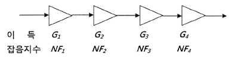
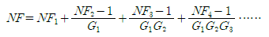
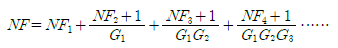
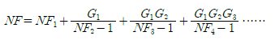
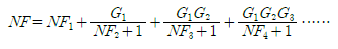
(정답률: 75%)
22. IS-95 CDMA 이동통신 시스템의 순방향 링크에서 단말기가 각 채널을 구분하는데 사용하는 코드는?
- 롱 코드(Long Code)
- 콘볼루션 코드(Convolution Code)
- 숏 코드(Short Code)
- 왈시 코드(Walsh Code)
(정답률: 79%)
23. TCP 세그먼트의 헤더(Header) 정보를 살펴보니, 헤더길이(HLEN) 필드의 비트 값이 ‘1111’이었다. 다음 중 헤더의 전체 크기로 적합한 것은?
- 30[Byte]
- 40[Byte]
- 50[Byte]
- 60[Byte]
(정답률: 81%)
24. QAM의 스펙트럼 효율을 향상시키기 위하여 I와 Q 채널에 PR(partial response) 필터를 사용한 QAM은?
- APK
- PRK
- QPR
- QPSK
(정답률: 68%)
25. 단말장치로부터의 디지털 데이터를 디지털 전송로에 맞는 신호로 변환하여 전송하고 수신측에서는 원래의 단말장치에서 사용하는 디지털 데이터 형태로 바꾸어주는 장비는?
- PCM
- DSU
- CODEC
- MODEM
(정답률: 77%)
26. 전송로의 대역폭이 3[kHz]이며, 신호대잡음비가20[dB]인 경우 샤논의 정리에 의한 전송로의 채널용량은 약 얼마인가?
- 약 4.75[kbps]
- 약 6.01[kbps]
- 약 16.08[kbps]
- 약 19.97[kbps]
(정답률: 74%)
27. 다음 중 무선통신기술에 대한 설명으로 가장 적합하지 않은 것은?
- 지그비(ZigBee) : 고전력, 고비용, 고속이 특징인 수 MHz대의 초광대역을 사용하는 초고속 무선데이터 전송기술로 IEEE 802.11과 블루투스(Bluetooth) 등에 비해 빠른 속도(500[Mbps]/1[Gbps])를 제공한다.
- 와이파이(WiFi) : 2.4[GHz]의 주파수 대역을 사용하며 하이파이(Hi-Fi, High Fidelity)에 무선기술을 접목한 것으로, 고성능 무선통신을 가능하게 하는 무선랜 기술이다.
- 와이브로(Wibro) : 무선과 광대역의 줄인 말로 국제적으로는 모바일 와이맥스로 통용되며 2.3[GHz]를 사용하여 휴대폰, 스마트폰의 3G 신망처럼 언제 어디서나 이동하면서 인터넷을 이용할 수 있는 기술이다.
- 와이맥스(WiMAX) : 휴대 인터넷의 기술 표준을 목표로 미국 인텔사가 개발한 IEEE 802.16d 규격의 무선 통신 기술로 전송 속도는 빠르지만 사용 반경이 좁다는 와이파이의 단점을 보완한 기술이다.
(정답률: 79%)
28. 다음 중 사용하는 주파수 대역이 나머지 셋과 다른 주파수 대역을 사용하는 무선랜(WLAN) 네트워크 표준 규약은?
- IEEE 802.11
- IEEE 802.11a
- IEEE 802.11b
- IEEE 802.11g
(정답률: 77%)
29. 다음 중 BcN의 특징에 대한 설명으로 적합하지 않은 것은?
- 종합통신 서비스 제공이 가능한 광대역 하부구조 역할을 수행한다.
- 가입자 네트워크의 통합으로 안전한 통합인증, 과금기능을 제공한다.
- IPv6를 가입자 이용환경을 제외한 통합 전달 네트워크에 사용한다.
- 접속계층, 전달 및 응용계층 등 전체 네트워크에 보안기능이 포함되어 있다.
(정답률: 72%)
30. 데이터 신호속도 4800[bps]인 모뎀에서 4위상 PSK를 사용할 때 변조속도는?
- 1,200[bps]
- 2,400[bps]
- 1,200[baud]
- 2,400[baud]
(정답률: 78%)
31. 다음 중 비동기 전송방식에 사용되지 않는 것은?
- 시작비트(start bit)
- 정지비트(stop bit)
- 프레임동기비트(frame synchronization bit)
- 휴지시간(idle time)
(정답률: 78%)
32. 다음 중 멀티미디어 압축방식으로 우리나라의 위성과 지상파 DMB에서 사용되는 영상 압축 기술 방식은 무엇인가?
- WMA
- MPEG2
- JPEG
- H.264/AVC
(정답률: 81%)
33. 800[kbps]로 인코딩된 동영상파일의 재생시간은 1초당 몇 byte의 크기를 갖는가?
- 48[kbyte]
- 80[kbyte]
- 100[kbyte]
- 6.4[Mbyte]
(정답률: 81%)
34. 문자 방식 프로 토콜에서 사용되는 전송제어 문자가 옳은 것은?
- STX : 텍스트의 개시
- SOH : 데이터 블록의 시작
- SYN : 헤딩의 개시
- EOT : 문자의 한 블록의 종료
(정답률: 80%)
35. 다음은 케이블 포설시 허용 장력이 250[kg], 케이블 무게 4[kg], 지하관로의 마찰계수가 0.5일 때 맨홀의 설치 간격은?
- 31.25[m]
- 125[m]
- 500[m]
- 2000[m]
(정답률: 85%)
36. 케이블 선로의 누화 경감대책으로 적합하지 않은 것은?
- 프로징
- 시험접속
- 압신기 사용
- 송신단 전류의 증가
(정답률: 70%)
37. 다음은 통신선로 공사시 사용되는 지하관로에 대한 설명이다. 옳지 않은 것은?
- 사업자가 설치하는 지하관로의 공수는 수용케이블 조수 + 예비관 공수로 적용한다.
- 수용케이블 조수는 계획케이블 조수×예비관 공수로 적용한다.
- 시내ㆍ외 케이블의 종국용량은 15년 후의 예상수요수로 한다.
- 수용케이블 조수는 1이상 10이하일 경우 예비관 공수 1이다.
(정답률: 61%)
38. 광통신에서 사용하기 위한 광원에 요구되는 특성이 아닌 것은?
- 발광 파장이 광섬유의 저손실 특성을 가지는 파장 영역이어야 한다.
- 장거리 광통신이 가능하도록 출력광의 세기가 충분히 커야 한다.
- 광의 고속 변조가 가능해야 하며, 입력 신호에 대한 광출력 특성이 선형적이어야 한다.
- 광섬유에서 색분산을 크게 하기 위해서는 광의 스펙트럼 폭이 좁아야 한다.
(정답률: 75%)
39. 다음 중 각 분산의 크기 나열이 맞는 것은?
- 재료 분산 > 모드 분산 > 구조 분산
- 모드 분산 > 재료 분산 > 구조 분산
- 재료 분산 < 모드 분산 < 구조 분산
- 모드 분산 < 재료 분산 < 구조 분산
(정답률: 87%)
40. 포설 장력이 200[kgf]인 광케이블을 고정할 때 허용곡률 반경은 광케이블 외경의 몇 배 이상이라야 하는가?
- 6배
- 10배
- 15배
- 20배
(정답률: 68%)
3과목: 임의 과목 구분(20문항)
41. 광파이버에서 광의 입사각 조건을 표시하기 위하여 사용되는 것은?
- 코어
- 클래드
- 편심률
- 개구수(Numerical Aperture)
(정답률: 87%)
42. 광섬유 굴절률 분포에 따른 분류에 대한 설명이 틀린 것은?
- 계단형과 언덕형으로 분류된다.
- 계단형은 코어와 클래드와의 경계에서 대부분 클래드 쪽으로 투과된다.
- 언덕형은 굴절률이 계단적으로 달라지지 않고 완만하게 연속적으로 변화하는 것이다.
- 다중모드 계단형 굴절률 광섬유는 모드 분산의 영향이 존재한다.
(정답률: 78%)
43. 다음 중 광섬유를 아크방전에 의한 고온을 이용하여 광섬유를 접속하는 방법은?
- 압착법
- 슬리브법
- 융착법
- 튜브법
(정답률: 92%)
44. 수신기의 감도 측정은 다음 중 어느 상태에서 하는가?
- 무외 최대 출력시
- 신호대 잡음비를 규정한 상태에서
- 이득 조정기를 최대로 한 상태에서
- 최대 출력시
(정답률: 84%)
45. Core의 굴절률 n1=2이고, Cladding의 굴절률 n2=√3 이었다고 하면 이 광섬유의 임계각도는 몇 도인가?
- 30
- 45
- 60
- 90
(정답률: 75%)
46. 어떤 광섬유의 광 입력 전력이 100[μW], 광출력 전력이 50[μW]이었다면, 이 광섬유의 손실은 약 몇 [dB]인가?
- 0.3
- 0.6
- 3
- 6
(정답률: 56%)
47. 다음 중 OTDR로 측정할 수 없는 것은?
- 광섬유의 거리
- 광섬유의 접속손실
- 광섬유의 손실
- 광섬유의 분산
(정답률: 74%)
48. 직류 출력 전압이 무부하일 때 250[V], 전부하일 때 225[V]이면 이 정류기의 전압 변동률은 약 [%]인가?
- 10.0
- 11.1
- 15.1
- 22.2
(정답률: 87%)
49. 방송통신설비의 사용전검사 대상에 해당하지 않는 공사는?
- 구내통신선로공사
- 위성통신설비공사
- 이동통신구내선로공사
- 방송공동수신설비공사
(정답률: 60%)
50. 아래 논리도에 대한 진리표 중 출력신호 Z의 값 a~h에 대한 값으로 올바르게 기술한 것은?
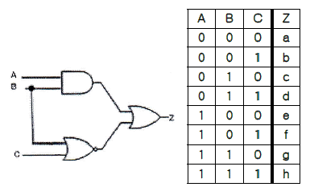
- 10001011
- 11101011
- 00011010
- 11010101
(정답률: 68%)
51. 다음 괄호 안에 들어갈 내용으로 가장 적합한 것은?
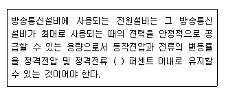
- ±1
- ±5
- ±10
- ±20
(정답률: 89%)
52. 정보통신공사업법에 따르면 방송통신시설물의 시공 품질의 적정성을 확보하기 위하여 설비가 기술기준에 적합하게 시공되었는지를 확인하는 것을 무엇이라고 하는가?
- 품질관리
- 사용전검사
- 검수
- 정보통신감리
(정답률: 78%)
53. 다음 중 무선설비의 안전시설기준으로 타당하지 않는 것은?
- 송신설비의 공중선 등 고압전기를 통하는 장치는 사람이 보행하거나 기거하는 평면으로부터 2.5[m] 이상의 높이에 설치되어야 한다.
- 송신설비의 케이스로부터 노출된 전선이 고압전기를 통하는 경우에는 그 전선이 절연되어 있을 때에도 전기설비의 안전관리를 위하여 필요한 기술기준에 따라 보호하여야 한다.
- 송신설비의 각 단위장치 상호간을 연결하는 전선으로서 고압전기를 통하는 것은 견고한 절연차폐체에 수용하여야 한다.
- 무선설비에 전원의 공급을 위하여 고압전기를 발생시키는 발전기 등은 외부에서 용이하게 접근할 수 있어야 한다.
(정답률: 80%)
54. 다음 중 괄호 안에 들어갈 내용으로 알맞은 것은?
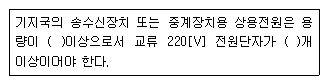
- 2[kW], 2개
- 2[kW], 3개
- 4[kW], 2개
- 4[kW], 3개
(정답률: 62%)
55. 설비 배치 방식에 대한 일반적 특징으로 가장 적절하지 못한 것은?
- 고정위치 배치는 제품이 커서 이동이 어려운 경우에 적합하다.
- 그룹배치는 제품별 배치와 공정별 배치의 혼합형으로 셀형 배치라고도 한다.
- 제품별 배치는 설비나 작업자에 문제가 생겼을 때 라인전체에 영향을 준다.
- 공정별 배치는 소품종 대량생산인 경우에 가장 적합한 형태이다.
(정답률: 85%)
56. 다음 중 올바른 식은?
- 기계능력 = 가동시간×기계대수
- 여력 = (부하-능력)/능력
- 작업자의 능력 = 환산인원×취업시간×가동률
- 유효가동시간 = 1개월가동시간×1개월실동시간×가동률
(정답률: 66%)
57. 제품의 제조명령에 대해서 1공정 1전표를 작성해 완료예정일 순으로 전표를 정리하여 지연작업을 조치하는 방법은?
- ABC Analysis
- 컴업(Come-Up) 시스템
- PERT
- 간트차트
(정답률: 81%)
58. 산업 현장의 자료에 따르면, 일반적으로 부가가치를 생성하는 작업공정 자체는 제품의 시스템 체류시간 중에서 5[%]이하를 차지하고 나머지 대부분은 ( )에 기인한다. 따라서 이것을 줄이는 것이 제품의 시스템 체류시간을 줄이는 길이다. 표준 공정도 기호로는 다음 그림과 같은 이것은 무엇인가?
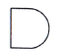
- 정체
- 검사
- 운반
- 저장
(정답률: 76%)
59. 작업계획은 생산계획의 단계 중 어디에 해당하는가?
- 실시계획
- 실행계획
- 준비계획
- 절차계획
(정답률: 84%)
60. 표준시간의 활용분야와 가장 거리가 먼 것은?
- BOM의 작성
- 생산계획 수립
- 생산원가 계산
- 생산성 평가
(정답률: 75%)